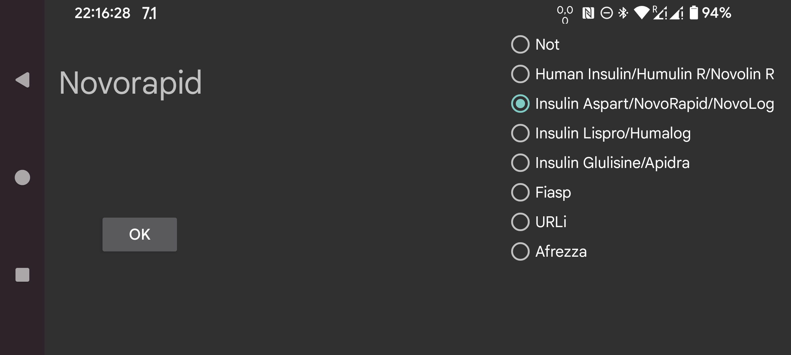
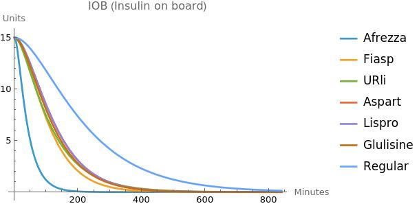

ar de es fa hi it ja ko nl ru tr uk uz en
«انسولین فعال در بدن» (IOB) برآوردی از انسولین باقیمانده از دوزهای پیشین است. پیش از Juggluco 9.2.0 برای محاسبهٔ IOB از منحنی غلظت خونی انسولین آسپارت استفاده میشد. اکنون میتوانید نوع انسولین را مشخص کنید تا منحنی غلظت خونی متناظر با همان نوع به کار رود. اگر برچسب مربوط به انسولین سریعالاثر نیست، «خیر» را انتخاب کنید؛ در غیر این صورت نوع انسولین را از فهرست زیر برگزینید:
انسولین انسانی / Humulin R / Novolin R
انسولین آسپارت / NovoRapid / NovoLog
انسولین لیسپرو / Humalog
انسولین گلولیزین / Apidra
Fiasp
URLi
Afrezza
نحوهٔ بهدستآوردن فرمولهای IOB در این صفحه توضیح داده شده است.
اگر نوعی از انسولین سریعالاثر را میشناسید که در فهرست نیست، میتوانید برای نویسنده ایمیل بفرستید.